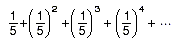
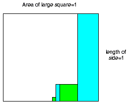
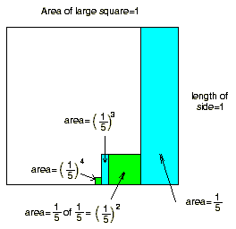
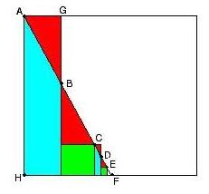

Don's new discovery about infinite series!
The figure below will work for any infinite geometric series.
We'll look at 


Notice some things in the diagram above: The odd powers of 1/5 are tall
rectangles, and the even powers are squares, which makes sense. Don flipped the
picture above about the axis of symmetry of the big square..
If we now draw a line which
connects point A, the upper left corner of the big square, to the upper right
corner of each of the smaller squares at C and E, we hit the base of the big
square at F and form the triangle AFH.
This triangle will have an area which will be the sum of the infinite
series!!
Try to figure out why this works yourself.
To other discoveries
To order
Don's materials
Mathman home